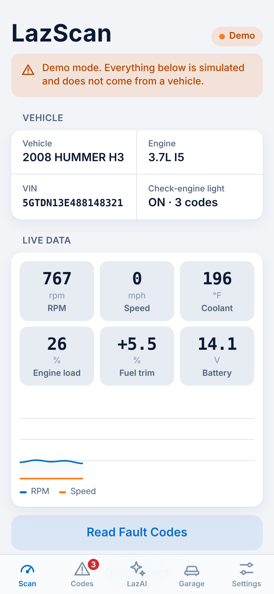
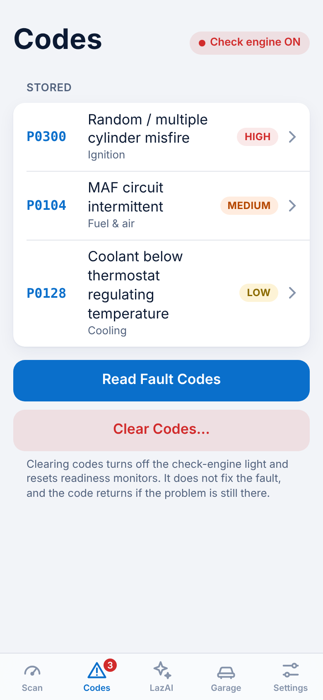
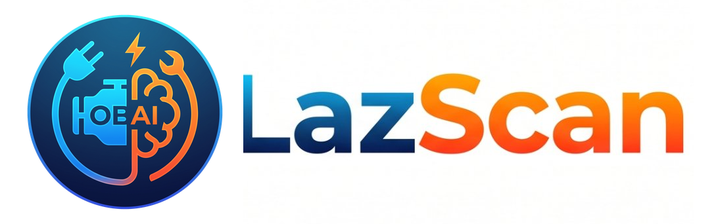

LazScan reads fault codes and live data from a Bluetooth OBD-II adapter, explains what they mean, and tells you what to check first. Free, installable, no app store.
Works in Chrome on Android and desktop, and in Bluefy on iPhone. Demo mode needs no adapter.


RPM, speed, coolant, load, fuel trim and battery voltage, straight from the car's computer.
Stored, pending and permanent codes in plain English with a severity rating. Clear them when the job is done.
Ask follow-up questions. It knows your vehicle, your codes and your live data. Uses your own free Groq key.
The VIN is read from the car and checked against the public NHTSA recall and complaint database.
Save a clean diagnostic report as a PDF to keep or hand to a shop.
Tap a tag on the filter or battery to read or write its part number and install date. Android + Chrome.
Fit a Bluetooth LE OBD-II adapter and turn the ignition on.
Tap Connect Adapter and choose it from your browser's list.
See live data and fault codes. The VIN is decoded automatically.
Open LazAI for likely causes, checks and fix steps.
The adapter engine (ELM327 setup, VIN, fault codes and live PIDs) is built and has been tested end to end against a simulated adapter. It has not yet been run against a wide range of real cars and adapters, so expect rough edges. Try Demo Mode first, and tell us which adapter and car you used.
| Adapters (BLE, ELM327 style) | Browsers |
|---|---|
| OBDLink CX | Chrome (Android, desktop) Edge (Windows) Bluefy (iPhone) |
| Vgate iCar Pro | |
| vLinker MC+ |
On iPhone, do not pair the adapter in system Bluetooth settings.
